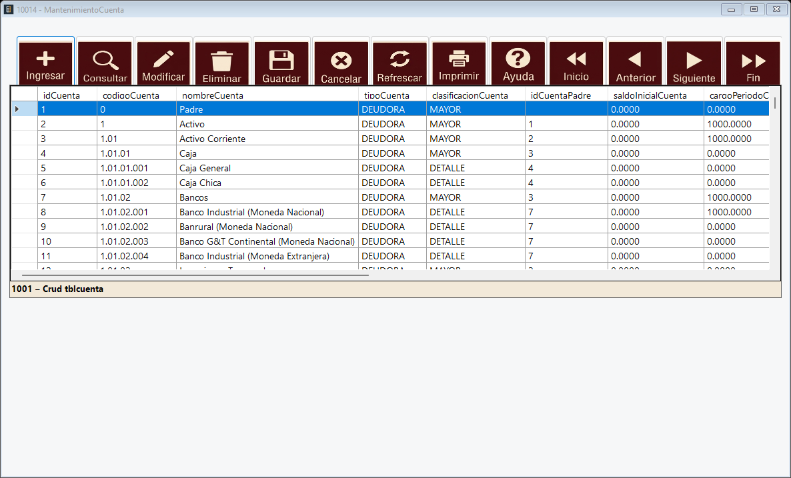

Catálogo de cuentas de la empresa. Las cuentas se organizan en árbol: las de clasificación MAYOR agrupan a otras y solo las de DETALLE reciben movimientos en las pólizas.

Código: código contable de la cuenta, por ejemplo 1.1.01.
Nombre: nombre de la cuenta.
Tipo: naturaleza de la cuenta: DEUDORA o ACREEDORA.
Clasificación: MAYOR (agrupa otras cuentas) o DETALLE (recibe movimientos).
Cuenta padre: cuenta que la agrupa; queda vacía en las cuentas de primer nivel.
Saldos: saldo inicial, cargos y abonos del período y saldo actual. Los calcula el sistema al aplicar pólizas y al cerrar el período; no se escriben a mano.
Estado: activo o inactivo.
La ventana usa el Navegador del sistema. Los botones que se muestran dependen de los permisos que el perfil del usuario tiene sobre la aplicación 10014.
Ingresar: habilita los campos para registrar un nuevo dato.
Consultar: busca registros con la consulta simple o la compleja.
Modificar: habilita los campos del registro seleccionado para cambiarlos.
Eliminar: quita el registro seleccionado, después de pedir confirmación.
Guardar: graba lo que se ingresó o modificó.
Cancelar: descarta la operación en curso y vuelve a bloquear los campos.
Refrescar: vuelve a cargar la tabla desde la base de datos.
Imprimir: abre el reporte de la tabla.
Ayuda: abre esta página.
Inicio, Anterior, Siguiente y Fin: recorren los registros de la tabla.
1. Presione Ingresar.
2. Llene los campos.
3. Presione Guardar. El sistema confirma que la grabación fue exitosa y el registro aparece en la tabla.
1. Seleccione la fila en la tabla; los campos se llenan con sus datos.
2. Presione Modificar, cambie lo necesario y presione Guardar.
3. Para quitarlo, seleccione la fila, presione Eliminar y confirme.
Una cuenta con movimientos no se elimina; márquela como inactiva.